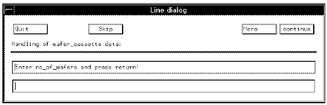

DIALOG_INPUT
Each time you specify a SCREEN_DIALOG or LINE_DIALOG a template screen - with predefined buttons and text - will appear on the monitor. However, to be able to input data in any of these screen, you must also specify one or more DIALOG_INPUTs (for each SCREEN_DIALOG or LINE_DIALOG entry).
For example, the following lines,
{wafer_cassette:
LINE_DIALOG
*no_of_wafers=DIALOG_INPUT/REGEXP(int);
produce the following screen,

DIALOG_INPUT must be used with a format specifier; REGEXP in the above example.
If more than one DIALOG_INPUT is specified in the LINE_DIALOG section, consecutive Line Dialog screens appear for each entry.